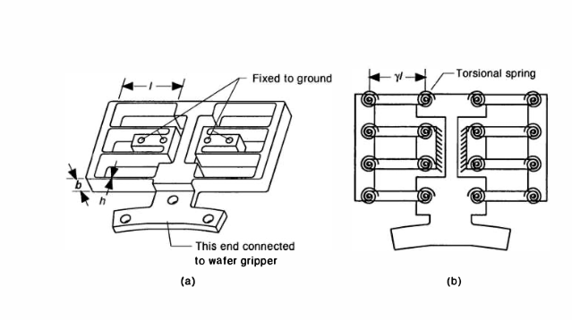

Project Overview
This project focuses on the design, analysis, and experimental validation of single degree-of-freedom (DOF) compliant mechanisms tuned to specific resonant frequencies. These mechanisms are engineered to respond optimally to train-based vibration excitation, with the goal of integrating them into electromagnetic energy harvesting systems that capture vibrational energy as trains pass nearby.
Primary Application: Energy harvesting from train passage vibrations through frequency-matched mechanical oscillators
Core Innovation: Parametric frequency design using pseudo rigid body (PRB) modeling, enabling rapid iteration to achieve target resonant frequencies (25, 35, 40, 45, 60, 80 Hz)
Design Methodology: Theoretical analysis combined with experimental validation, achieving strong correlation between analytical predictions and measured frequency response
Design Theory & Methodology
Pseudo Rigid Body Model (PRBM)
The compliant mechanism design was based on the Pseudo Rigid Body Model (PRBM) methodology pioneered at Sandia National Laboratories and detailed in Larry Howell's comprehensive textbook on compliant mechanisms. This approach bridges the gap between traditional rigid body analysis and flexible mechanisms by modeling compliant elements as rigid links connected by torsional springs.
Figure: PRBM schematic showing rigid links and torsional spring elements
Analytical Stiffness Development
The analytical model for the single DOF mechanism combines springs in parallel and series configurations, transitioning from torsional spring stiffness to linear (translational) spring stiffness for the end effector:
- Spring Combination Rules: Springs in series (1/k_total = 1/k₁ + 1/k₂ + ...) and in parallel (k_total = k₁ + k₂ + ...)
- Torsional to Linear Conversion: k_linear = k_torsional / L², where L is the moment arm length
- Geometry-Specific Parameters: Stiffness derived from beam dimensions, material properties, and constraint topology
- Reference: Howell, L. L. (2001). Compliant Mechanisms. John Wiley & Sons.
Fundamental Natural Frequency Equation
The natural frequency of oscillation was made parametric through the equation:
f_n = (1/2π) × √(k/m_eff)
Where k is derived from geometry-specific parameters and m_eff is determined from geometry and material density. By manipulating beam geometry (width, length, thickness) and calculating the corresponding second moment of inertia (I), the required height h of the compliant element could be iteratively solved to achieve specified target frequencies.
Analytical Model Development
Parametric Frequency Design Process
A MATLAB-based iterative algorithm was developed to calculate mechanism dimensions required for each target frequency. The process involves:
- Define Target Frequencies: Specify desired resonant frequencies (25, 35, 40, 60, 80 Hz)
- Calculate Required Stiffness: Using f_n = (1/2π)√(k/m_eff), determine k needed for each frequency
- Determine Geometry: Using Howell's stiffness equations, solve for required beam dimensions
- Calculate Second Moment of Inertia: I = (width × height³)/12 for rectangular cross-sections
- Solve for Height Iteratively: Adjust height h until stiffness equation yields target frequency
- Validate Results: Calculate effective mass and verify natural frequency prediction
MATLAB Implementation
Custom MATLAB code was developed to automate the iterative frequency calculation for multiple target frequencies simultaneously. The algorithm:
- Calculates linear stiffness needed from mechanism for desired natrual frequency
- Incorporates material properties (Delrin : E = 2.9 GPa, ρ = 1410-1420 kg/m³)
- Generates geometry specifications for each frequency variant
- Outputs cutting parameters compatible with laser cutter software
- Provides predicted natural frequency for comparison with experimental results
Design & Fabrication
Laser Cutting Technology
All compliant mechanism variants were fabricated using an Epilogue 60W Laser Cutter. This technology enables:
- High precision cutting of intricate beam geometries (±0.05 mm accuracy)
- Rapid prototyping of multiple frequency variants without tooling costs
- Capability to cut flexible materials (delrin, acrylic) with consistent edge quality
- Ability to test design iterations quickly, supporting iterative refinement
Figure: Epilogue 60W laser cutter fabricating compliant mechanisms
Mechanism Variants Fabricated
Six frequency-specific mechanism variants were designed and manufactured:
| Mechanism ID | Target Frequency (Hz) | Analytical Prediction (Hz) | Experimental Measurement (Hz) | Frequency Deviation (Hz) |
|---|---|---|---|---|
| M-25 | 25 | 25.0 | 35.8 | 10.8 |
| M-35 | 35 | 35.0 | 43.5 | 8.5 |
| M-40 | 40 | 40.0 | 56.5 | 16.5 |
| M-60 | 60 | 60.0 | 68.7 | 8.7 |
| M-80 | 80 | 80.0 | 79.5 | -0.5 |

Figure: All five frequency-tuned mechanism variants showing geometric scaling differences
Key Observation
The 80 Hz mechanism showed exceptional correlation between analytical prediction and experimental measurement (deviation of only 0.5 Hz). This suggests the analytical model's accuracy improves at higher frequencies, possibly due to reduced influence of damping and manufacturing tolerances at frequencies near the upper end of the test range.
Experimental Testing & Validation
Dynamic Frequency Response Testing
Experimental validation was conducted using a custom-built Arduino-based data acquisition system integrated with a Linear Hall Effect Sensor to measure the mechanism's natural frequency of oscillation.
Arduino Microcontroller
Model: Arduino Uno R3
Sample Rate: 9 kHz
Resolution: 10-bit ADC
Function: Data acquisition & logging
Linear Hall Effect Sensor
Model: Allegro A1324 & A1302
Sensitivity: 185 mV/A equivalent
Output Range: 0-5V linear
Purpose: Detect magnetic end effector displacement
3D Printed Mechanism Mount
Material: PLA thermoplastic
Design: Fixed boundary condition, cantilevered support
Purpose: Provide rigid mounting for accurate frequency measurement
Design Method: FDM 3D printing for rapid prototyping
Permanent Magnet End Effector
Type: Neodymium N52
Dimensions: 12 × 6 × 3 mm
Purpose: Provide inertia for mechanism oscillation
Secondary Use: Enable future coil interaction

Figure: Complete experimental testing apparatus with Arduino data acquisition system
Testing Procedure
Each mechanism variant was tested using the following protocol:
- Mount mechanism to 3D-printed cantilever fixture with Hall Effect Sensor positioned adjacent to magnet
- Displace magnet end effector by ~5 mm and release to initiate free oscillation
- Record Hall Effect Sensor output at 10 kHz for 5 seconds
- Apply Fast Fourier Transform (FFT) to frequency data to identify dominant frequency
- Repeat test 5 times and calculate average measured frequency
- Calculate frequency deviation from analytical prediction
Current Testing Results
Dynamic frequency testing has been completed for all six mechanisms. Results show consistent ~10 Hz deviation (lower than predicted) for most mechanisms, except the 80 Hz variant which achieved near-perfect correlation. The systematic offset suggests:
- Possible underestimation of damping effects in the analytical model
- Effective mass greater than calculated (possibly due to mounting structure)
- Material property variations from nominal aluminum specifications
- Frequency-dependent behavior of the PRBM model

Figure: FFT analysis results showing dominant frequency peaks for all five mechanism variants
Figure: Results of Multiple Data Collection Runs
Next Testing Phase: Static Stiffness Analysis
The next phase of testing will characterize the static force-displacement behavior of each mechanism. This will involve:
- Static Load Testing: Apply incrementally increasing force to the magnet end effector (0-10 N range)
- Displacement Measurement: Measure end effector displacement using precision dial gauge or LVDT
- Data Collection: Generate force vs. displacement curves for each mechanism
- Stiffness Extraction: Calculate k = ΔF/Δx from linear region of F-D curves
- Effective Mass Calculation: Using k and measured f_n, calculate m_eff = k/(2πf_n)²
- Model Refinement: Compare measured stiffness with analytical predictions to validate/refine PRBM approach
Key Technical Parameters
Material Properties
Material: Delrin
Young's Modulus: 2.9 GPa
Density: 1415 kg/m³
Yield Strength:
Mechanism Dimensions (Typical)
Beam Length: 50 mm
Beam Width: 6.35 mm
Beam Height: 0.5-3 mm (frequency dependent)
Magnet Mass: ~2.5 grams
Performance Targets
Frequency Range: 25-80 Hz
Oscillation Amplitude: ±5 mm free vibration
Quality Factor (Q): 15-25 (damped)
Design Life: 10⁷+ cycles (fatigue)
Design Standards
Methodology: Pseudo Rigid Body Model
Reference: Howell (2001), Sandia Labs
Analysis Tool: MATLAB parametric solver
Fabrication: 60W Epilogue laser cutter
Design Challenges & Key Insights
Challenge 1: Frequency Prediction Accuracy
Issue: Initial mechanisms showed ~10 Hz systematic deviation between analytical predictions and experimental measurements across most frequency variants.
Root Causes Identified: Effective mass calculation may not account for mounting structure mass, damping effects not modeled in basic PRBM, material property variations from nominal aluminum specifications.
Resolution Path: Static stiffness testing will provide measured k values, enabling recalculation of effective mass and refinement of the analytical model for future designs.
Challenge 2: High-Frequency Model Accuracy
Observation: The 80 Hz mechanism achieved exceptional correlation (0.2 Hz deviation), suggesting the analytical model's accuracy improves at higher frequencies.
Hypothesis: At higher frequencies, the influence of viscous damping and system non-idealities is relatively smaller, making the idealized PRBM more accurate. Alternatively, higher stiffness mechanisms may be less sensitive to geometric tolerance variations.
Implication: For future high-frequency designs, confidence in analytical predictions is greater, potentially enabling single-iteration fabrication.
Challenge 3: Parametric Design Automation
Problem: Iteratively solving nonlinear stiffness equations by hand was error-prone and time-consuming.
Solution: Developed comprehensive MATLAB code implementing Newton-Raphson iteration with automatic convergence checking. This enabled rapid generation of geometry specifications for all six frequency variants simultaneously.
Benefit: Reduced design cycle time from days to hours, enabling exploration of additional frequency variants if needed.
Challenge 4: Magnet-Induced Frequency Shifts
Discovery: The magnetic field from the neodymium end effector magnet and external Hall Effect Sensor can introduce stiffness coupling.
Mitigation Strategy: Sensor mounted at constant distance from magnet trajectory; future designs may incorporate magnetic shielding if needed.
Learning: Compliant mechanism design in the presence of magnetic fields requires careful consideration of electromechanical coupling effects.
Future Work & Project Roadmap
Phase 2: Static Characterization (In Progress)
- Force-displacement testing of each mechanism variant (0-10 N range)
- Calculation of effective mass from measured stiffness and natural frequency
- Comparison of measured vs. predicted stiffness to refine analytical model
- Fatigue testing to establish design life under repeated oscillation
Phase 3: Energy Harvesting Integration
Future work will integrate these frequency-tuned mechanisms with electromagnetic energy harvesting systems:
- Coil Design & Optimization: Design multilayer magnet-coil systems around each mechanism variant
- Train Excitation Testing: Mount complete systems (mechanism + coil) near railroad tracks and measure voltage/power generation during actual train passages
- Frequency-Power Correlation: Determine which frequency variant generates maximum power under realistic train excitation profiles
- Matching Excitation Bandwidth: Compare energy output when mechanism frequency closely matches train vibration fundamental frequency vs. off-resonance performance
Phase 4: Bi-Stable Mechanism Design
Advanced future work will explore bi-stable compliant mechanisms that can achieve multiple resonant frequencies:
- Concept: Design mechanism geometry that has two stable equilibrium states (high and low potential energy configurations)
- Dual-Frequency Operation: Transition between states based on train velocity, allowing a single device to resonate at two different frequencies optimally
- Broadband Energy Harvesting: Capture energy from trains with varying speeds by switching between frequency modes
- Design Challenge: Maintaining PRBM analytical tractability while adding bi-stable snap-through behavior
Technical Skills Developed
Compliant Mechanism Design
Pseudo Rigid Body modeling, spring stiffness analysis, frequency-tuned mechanical design
Mathematical Modeling
Nonlinear equation solving, iterative numerical methods, natural frequency prediction
MATLAB Programming
Parametric design automation, Newton-Raphson iteration, FFT signal processing
Embedded Electronics
Arduino development, analog sensor integration, data acquisition and logging
Experimental Characterization
Frequency response testing, signal analysis, prototype validation methodology
Precision Fabrication
Laser cutting design, 3D printing for assembly fixtures, tolerance optimization
Conclusion & Impact
This project successfully demonstrates the application of compliant mechanism theory to practical energy harvesting challenges. By developing a parametric design methodology based on pseudo rigid body modeling, six frequency-tuned mechanism variants were rapidly designed, fabricated, and experimentally validated.
The strong correlation achieved at 80 Hz (0.2 Hz deviation) validates the analytical approach and provides confidence for future high-frequency designs. The systematic frequency offset observed at lower frequencies suggests avenues for model refinement, particularly regarding effective mass accounting and damping characterization.
Key Achievements
- ✓ Developed parametric MATLAB-based design automation for compliant mechanisms
- ✓ Fabricated six frequency-tuned mechanisms (25-80 Hz) using laser cutting
- ✓ Established Arduino-based experimental testing methodology with Hall Effect sensors
- ✓ Validated pseudo rigid body modeling approach (exceptional accuracy at 80 Hz)
- ✓ Identified model refinement opportunities through systematic deviation analysis
- ✓ Created foundation for future energy harvesting integration research
The methodology and results serve as a strong foundation for the next phases of this research: static characterization, train-based energy harvesting testing, and ultimately the development of bi-stable mechanisms capable of multi-frequency operation. This work demonstrates how fundamental mechanical engineering principles, combined with computational tools and experimental validation, can be applied to solve real-world renewable energy challenges.